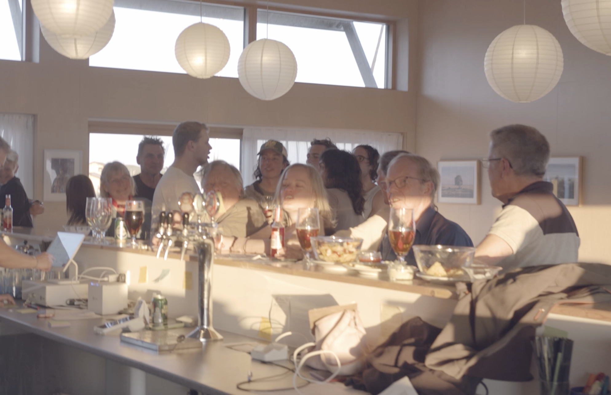

På Sejerø handler livet ikke om at nå mest muligt men om mere tid sammen
På Sejerø er nærvær, fællesskab og trygge omgivelser en naturlig del af hverdagen. Her vokser børn op tæt på naturen med frihed til at cykle rundt og være en del af små, stærke fællesskaber. Hverdagen fungerer stadig med skole, arbejde og fritidsliv - bare i et roligere og mere overskueligt tempo med mere tid sammen som familie.

Morgenrutinerne foregår i et roligere tempo, hvor børnene trygt kan cykle til skole.

Havet, naturen og de lokale aktiviteter skaber gode muligheder for fællesskab.

Når tempoet sænkes, bliver der mere plads til nærvær og fællesskab.

Naturen vågner, og fællesskabet flytter udenfor igen

Lange lyse dage, fællesskab og udeliv præger sommeren.

Tempoet sænkes, og naturen bliver en del af det rolige hverdagsliv.

Selv i vintermånederne er nærvær og fællesskab vigtigt.